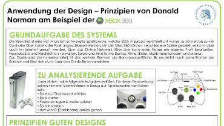

After successfully finishing my undergraduate studies at Humboldt-Universität zu Berlin and earning my Bachelor of Science degree in Psychology, I still wanted to learn more about human-machine-interaction. That is why I enrolled at Technische Universität zu Berlin and am currently finishing the Human Factors Master of Science program.
My main interest is in the usability and user experience of software products, as well as the methodology of Design Thinking. I pursue to enhance my theoretical knowledge and practical skills in those fields through application-oriented student projects and my position as a User Researcher at D-LABS GmbH, Potsdam, Germany.
Focussing on b2c projects, I have developed a strong love for the actual end users requirements, desires and needs. In my work, the objective is not just to enhance a product's efficacy and effectiveness, but to also provide the user with the most intuitive, stimulating and engaging UX possible.
Work
Product Development and Strategic Re-Orientation: Certification System for a US Sports Association
An online platform was created in an effort to digitalize the certification process for people wanting to participate in competitions.
An additional goal was to find solutions that leverage the data collected thanks to a universal certification system.
Utilized methods included:
- focus group
- remote and on-site usability test of interactive prototype
- semi-structured interview
- concurrent think-aloud
- design puzzle/co-creation
- prototyping on various fidelity levels

User Research: Website Usability Tests for German Landesbausparkasse (public sector home savings and loan institution)
The German Landesbausparkasse launched a campaign to give its customers an easy option to inform themselves about core aspects of home loans and other saving options.
The key features of the
website tested included an instantanious calculation of various rate, saving and timing options.
Utilized methods included:
- on-site usability test
- semi-structured interview
- concurrent think-aloud
- storytelling
- backlog grooming/prioritizing and assigning action items
Training: Development and Excecution of a Training Program for Design Thinking Coaches
In an effort to expand the portfolio of the D-LABS academy, a job training concept for Design Thinking Coaches was created and excecuted for the first time in a team of two.
That included the development and structuring of training topics, the realization of education materials (worksheets, presentations, handbooks and course hand-outs) and the training of multiple Design Thinking Coaches.
The product consisting of training concept, execution and materials is being sold to new and existing clients.
University
Master Thesis: Influence of Social Support Features on the Motivation to use an mHealth-Application
Through systematic analysis of the benefits of different social support types, an approach was found to add social support features to an app assisting adolescent scoliosis patients in their treatment.
The project included the construction and validation of an appropriate measurement scale, as well as the design of feature prototypes and a suitable
testing environment.
Utilized methods included:
- desk research/literature screening
- survey design
- measurement scale design
- survey research
- semantic differential
- low fidelity prototyping (sketching)
The study was conducted under the umbrella of the regional innovation cluster
BeMobil, funded by the
German Federal Ministry of Education and Research.
The main study is the subject of a paper that was accepted to be presented at the
9th Applied Human Factors and Ergonomics Conference and will be published in the AHFE 2018 Conference Proceedings and Springer books.
Additionally, efforts are made to develop and validate an english version of the measurement scale created for and used in this study.
Bachelor Thesis: Formative Usability Evaluation of the Smartphone App ( OFFTIME )
A heuristic evaluation of the existing product lead to the identification of usability flaws. Using evolutionary prototypes, solutions were evaluated in 3 iterations of formative usability tests. A concluding summative evaluation was used to quantify the usability gains achieved.
Take a look at the app
here.
Awards: "Best Apps of 2014" by Google; "Sehr gut (very good) - 4,78/5" by Netzsieger (2015)
Utilized methods included:
- heuristic evaluation
- formative usability evaluation
- self-developed walktrough (combining cognitive walkthrough and CE+ theory)
- semi-structured interview
- summative usability evaluation
Example Student Project: Usability and User Experience Evaluation of the Smartphone App Beatsnap
Following the Design Thinking process, the project started off with an evaluation of the targeted user group and the identification of main requirements. The existing product was assessed through a heuristic evaluation.
Afterwards, consecutive A/B tests were developed and conducted using interactive prototypes of multiple fidelity levels. The results and design implications were presented to the founder.
Take a look at the app
here.
Utilized methods included:
- heuristic evaluation
- A/B testing
- prototyping on multiple fidelity levels
- semi-structured interview
- co-creation
Hackathons
BottyCall: Chatbot based on mood prediction
The objective of this
chatbot, created at the
Bot.Hack Berlin was to leverage mood predicition for conversation initiation.
Through the data gathered by a cycle tracking app, female sexual arousal could be predicted and used as a conversation starter. Based on privacy levels, desired media usage and other personalized conversation metrics, the bot could offer a form of self-empowerment and enjoyment to the user.
The project was rewarded with the
Telefónica Mobile Lifestyle Challenge Award and the Audience Award.
The bot's behavior and dialog structure were designed with NLU tools provided by Api.ai (now:
dialoglow), including:
- intent matching
- entity extraction
- dialog design/dialog flow
- ML classifier training
The design of the conversational interaction was defined in dialog flow graphs
Due to the sensitive topic, privacy issues needed to be taken into close consideration. An additional challenge was ensuring appropriate reactions to the individual users intended intensity level. Since no "one size fits all" conversation solution could be pre-formulated, the bot was trained to be able to adjust its output to the specific user and their current situation.
Additionally, efforts were made to give the bot a consistent personality and answer structure even in reaction to unexpected or off-topic inputs.
Chef2go: Shopping assistant for Google Glass
The objective of the
Hack'n'Wear Hackathon Berlin in cooperation of
Salesforce and
Accenture was to develop innovative software solutions for wearables.
Chef2go for Google Glass was developed as a mobile shopping assistant, leveraging the users food preferences while minimizing the waste of food.
Google Glass's Speech to Text functionality was used as the interface for the initial communication between the user and the app. Effords were made to ensure a smooth and intuitive interaction flow of choosing ingredients, recipes and creating shopping lists. It was made sure that all
Google Glass design guidelines were being followed.
The 3 APIs used to realize the functionality of Chef2go were:
- Mirror API
- Salesforce API
- Recipes API
University Presentations and Documents
Master Thesis Thesis
Integration of Social Support into an App for Adolescent Scoliosis Patients in context of the innovation cluster BeMobil. Systematic analysis of the benefits of different dimensions of social support for the patient’s motivation and UX.

Master Thesis preliminary
Integration of Social Support into an App for Adolescent Scoliosis Patients in context of the innovation cluster BeMobil. Systematic analysis of the benefits of different dimensions of social support for the patient’s motivation and UX.

Bachelor Thesis
Heuristic, formative and summative usability evaluation of the smartphone app ( OFFTIME ). Deduction of design implications and test of their effects on the usability of the product in close cooperation with the development team. Thesis under the supervision of Prof. Hartmut Wandke and Prof. Annekatrin Hoppe
Usability Test of the smartphone app Beatsnap
Second part of the consecutive A/B-Test conducted with the app Beatsnap. Analysis of the effect an added tutorial could have on the UX, deduction of further design implications. In context of the seminar "usability for small- and medium-sized businesses" at Technische Universität Berlin in cooperation with Hoai Anh Nguyen, Avner Shahal, Lascha Sochadse and Fabian Zeier under the supervision of Nils Backhaus and Anna Trapp.

Usability Test of the smartphone app Beatsnap
Heuristic evaluation, development of a prototype and conduction of the first part of an A/B-Test. Deduction of design implications. In context of the seminar "usability for small- and medium-sized businesses" at Technische Universität Berlin in cooperation with Lascha Sochadse and Fabian Zeier under the supervision of Nils Backhaus and Anna Trapp.

Modeling of an interaction with WhatsApp
Presentation in context of the lecture "Introduction to cognitive modeling" in cooperation with Simon Kock and Anka Stephan under the supervision of Prof. Nele Rußwinkel

Alternative Architectures - Soar and 4CAPS
Presentation in context of the lecture "Introduction to cognitive modeling" in cooperation with Niklas Fasching, Mirja Hollmann and Nikolai v. Seydlitz under the supervision of Prof. Nele Rußwinkel

Application of Donald Norman's design principles on the Xbox 360
For more details view presentation and documentation.
Presentation: Challenges for Design
Presentation for the seminar "Operational and display concepts" at Humboldt-Universität zu Berlin in cooperation with Anna Rychla and Anne Schmidtke under the supervision of Prof. Hartmut Wandke
Presentation: Human-machine interaction with technical household appliences.
Presentation for the seminar "Psychology and technics" at Humboldt-Universität zu Berlin under the supervision of Prof. Hartmut Wandke
Get in Touch
If you would like to know more about me and my projects or if you are interested in any kind of collaboration, please feel free to contact me.
I am more than happy to get in touch with you!


{kind=link}